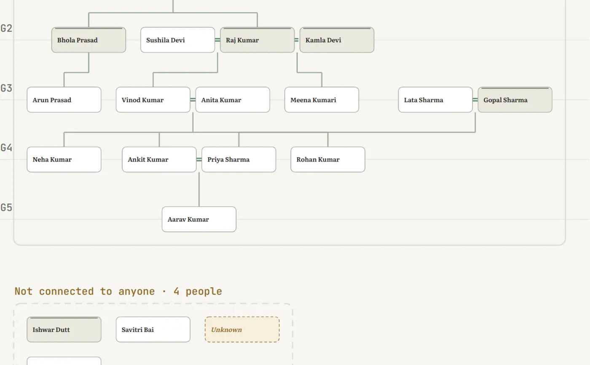
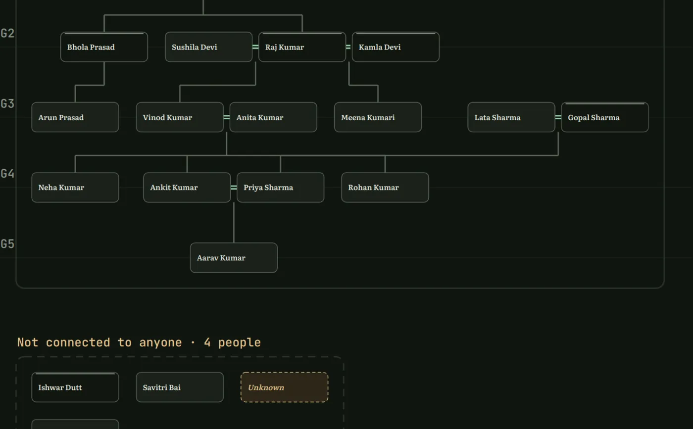
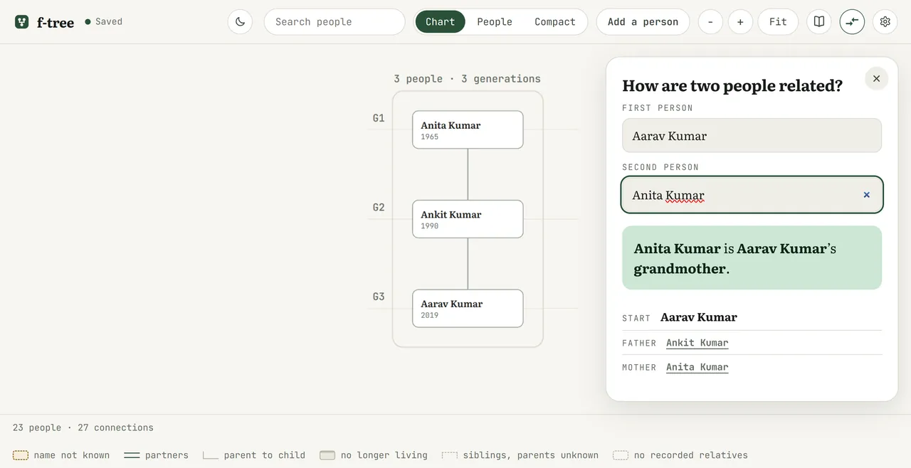
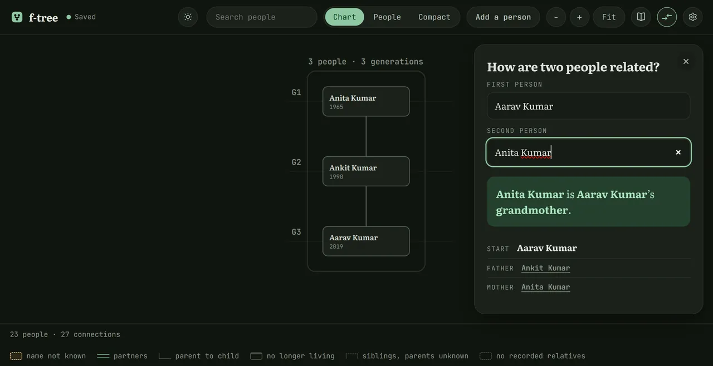

A person needs no name
The dashed card is how f-tree draws someone you know exists but can’t name. Try it: give Shyam Lal’s wife a name, and nothing around her moves.
Shyam Lal’s wife is in this tree. Her name isn’t.
f-tree is a free family tree app for Android, Windows and Linux. Add the relatives whose names were never written down, ask how any two people are related, and keep everything on your own device.
Android 8.0+, Windows 10 and 11, Ubuntu and other Linux. Latest release.


A blank person is a real person. Record the grandfather’s brother nobody remembers, then give him a name years later without disturbing a single relationship.
Pick any two people. f-tree names the relationship in English or Hindi and lists every person the line runs through. It walks marriages as well as blood.
No sign-up, no cloud, no ads. Your tree is a file you can back up, send to a cousin, or open without the app.
Most family tree apps assume you know everyone. f-tree is built around the gaps.
The dashed card is how f-tree draws someone you know exists but can’t name. Try it: give Shyam Lal’s wife a name, and nothing around her moves.
Shyam Lal’s wife is in this tree. Her name isn’t.
Hindi has five words where English has “uncle”. f-tree picks the right one.
First cousin once removed, mother-in-law, great-great-grandfather. Choose two people and read the answer, with the line it followed.


Send one branch of the family as a small file. When your cousin imports it, it merges into their tree and shows the evidence for any possible duplicate first. Importing the same file twice adds nobody.
Or send a tree straight to a device on the same Wi-Fi, with no account and nothing in between.
How sharing worksA quiet “Coming up” list for the next 30 days, and a place to remember the people who have died. Reminders are off until you ask for them.
A printable PDF with a cover, everyone in the family and an index to find yourself in. Made on your own device.
About the family bookOn desktop, every change is written to your file about a second later, and the last five versions are kept. A crash never leaves half a tree.
You can start with nothing, or with a file someone sent you.
Start a new tree or open a .ftree file. Leave a blank wherever a name is missing, and f-tree keeps the place for them.
Several marriages, half-siblings, adoption and step-relations all work without special cases. See the family as a chart, a list or a compact reading.
Find how two people are related, send a branch to a cousin, or make a PDF book of the family.
The same tree opens on all three. A .ftree made on any of them opens on the others.
Android 8.0 or newer. f-tree isn’t on the Play Store yet, so you install a signed APK, and the guide shows each prompt you’ll see.
Download for AndroidWindows 10 or 11, 64-bit. Installs for your account with no administrator password. The installer isn’t code-signed yet, so Windows asks you to confirm.
Download for WindowsA .deb for Ubuntu, Debian and Mint that needs nothing afterwards, plus a portable folder and an AppImage.
Every file has a published checksum. All downloads, other Linux files and checksums, or open a tree in your browser without installing anything.
f-tree has no server because it has no use for one. Here is what that means in practice.
| f-tree | Typical online tree builder | |
|---|---|---|
| Account to sign up for | None | Required |
| Where your tree lives | A file on your device | The company’s servers |
| Works offline | Fully | Often limited |
| Analytics and ads | None | Common |
| Your data, when you leave | A documented file, free to export | Varies |
| Source code | Open, MIT licence | Closed |
| Price | Free | Free tier, then paid plans |
The right column describes the usual online tree builder, not any one product. Read what f-tree can and can’t reach, permission by permission.
Yes. There is no subscription, no trial, no advertising and no paid tier today. f-tree is open source under the MIT licence, built and maintained by one person.
Exporting and importing your own tree is designed to stay free, whatever else changes.
No account, ever, and no internet connection to use it. Three optional things touch a network, and each is off until you switch it on: the update check, the check for new book templates, and nearby sharing, which talks to a device on the same Wi-Fi.
Yes, and this is the reason f-tree exists. A person with no name is a valid person: record the great-grandmother nobody wrote down, place her in the family, and give her a name years later without disturbing anything around her.
Pick any two people and f-tree names how they are related, for example “first cousin once removed” or “mother-in-law”, and lists every person the line runs through. It walks marriages as well as blood relations, because “my wife’s mother” is what people actually ask.
The Windows installer is not code-signed, so Windows shows “Windows protected your PC” and lists the publisher as Unknown. Choose More info, then Run anyway. Every file is built in the open by GitHub Actions and has a SHA-256 checksum you can check.
f-tree is installed from a signed APK for now. Your browser and Play Protect will each ask for a confirmation, and the install guide shows exactly what to tap. The APK is signed with a key that stays the same for every release, so an update signed by anyone else refuses to install.
It takes a minute to install and nothing to sign up for. Start with yourself, or with the oldest relative you can name.